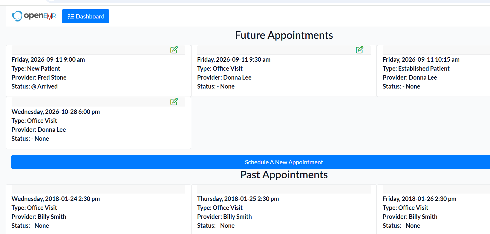

View and Search Appointments
Review future appointments and use the appointment search screen to locate an appointment.
-
Open the appointments area.

- Review the listed appointments.
-
Open the appointment search function when you need to locate a specific
appointment.

- Enter the available search criteria and run the search.